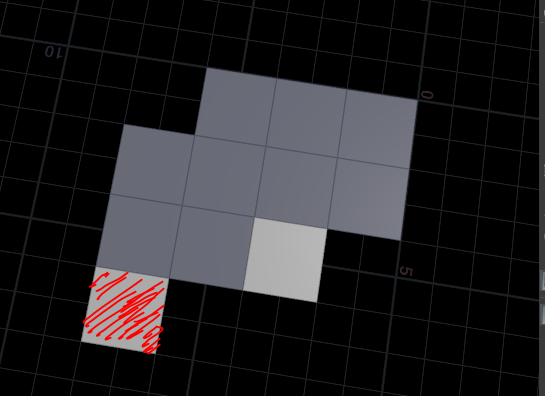
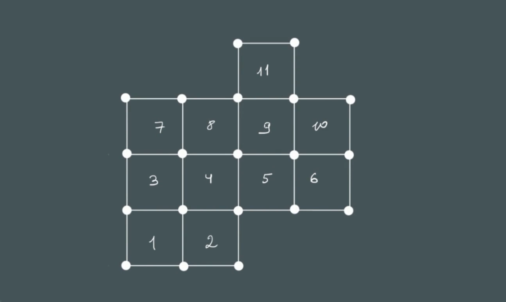
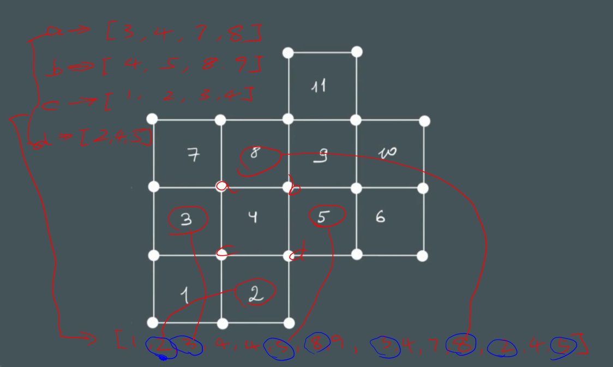

提取指定面
实现结果

算法
类似上面提取点的思路，找到每个面的相邻面，根据相邻面个数可提取想要的面
注意：
相邻面是指共享边的面，只共享点的不算相邻面
4号面相邻 [2 3 5 8]
8号面相邻 [4 7 9]
11号面相邻 [9]

原作者制作思路 - 比较绕
每个面4个点，每个点又被其他面共享。

这里用4号面举例
- 4号面的4个点是a,b,c,d
- a的共享面是[3,4,7,8] ，b的共享面是[4,5,8,9]，c的共享面是[1,2,3,4]，d的共享面是[2,4,5]
- 因为4是自身面，在这里吧4剔除，[3,7,8,5,8,9,1,2,3,2,5]
- 出现2次的面是[2,3,5,8]
这样就能提取出相邻面的列表，如果列表只有1个元素，就是我们要找的单独面
// VEX code
// run over:primitives
// ----------------
// primpoints(<geometry>geometry, int primnum) 返回面上的点列表。
// pointprims(<geometry>geometry, int ptnum) 返回点的面列表。
int pts[] = primpoints(0, @primnum);
int neighs_pcheck[],neighs_all[];
foreach (int pt; pts){
neighs_pcheck = pointprims(0, pt);
append(neighs_all, neighs_pcheck);
}
int max = max(neighs_all);
int found;
int neighs_prims[];
for (int i = 0; i <= max; ++i){
found = 0;
if (i != @primnum) {
foreach (int pr; neighs_all){
if (pr == i) {
found++;
}
}
if (found > 0 && found%2==0 ) {
append(neighs_prims, i);
}
}
}
vex polyneighbours
这样只用1行就能找到所有相邻面列表
// VEX code
// run over:primitives
// ----------------
// polyneighbours(<geometry>geometry, int primnum)
// 返回多边形的相邻面序号数组。
int neigh_prims[] = polyneighbours(0,@primnum);